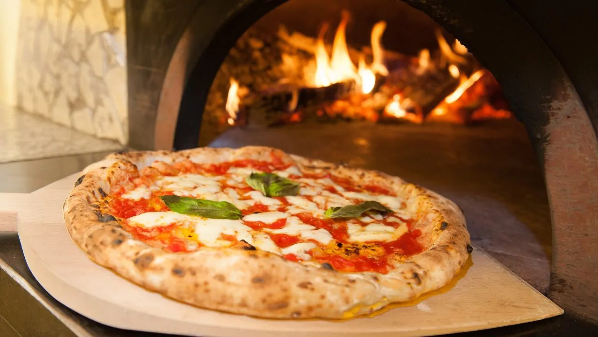

Chi siamo
Nel 1870 la famiglia Condurro diede origine ad una lunga tradizione di maestri pizzaioli nel cuore del centro di Napoli. Michele Condurro, figlio di Salvatore, perfezionò l’arte familiare imparandone i segreti dai famosi maestri di Torre Annunziata esperti nella lavorazione della pasta e della cottura della pizza. Michele apri la prima pizzeria nel 1906 laddove sorge la nuova palazzina dell’ospedale Ascalesi, la cui costruzione costrinse Michele a cambiare sede. Nel 1930 infatti, la pizzeria fu spostata nell’attuale locale di Via Cesare Sersale, definito da molti esperti e giornalisti “il tempio sacro della pizza” Da allora, cinque generazioni di maestri pizzaioli, con a capo i due amministratori Antonio Condurro e Michele Condurro, figlio e nipote del capostipite Michele, continuano l’attività del fondatore nel rispetto della tradizione e tenendo fede alle indicazioni di Michele, che volle la pizza napoletana solo nei gusti “Marinara” e “Margherita” senza l’aggiunta di “Papocchie”, che ne alterano il gusto e la genuinità le quali sono conosciute ed apprezzate in tutto il mondo. Il segreto di questo duraturo successo, sono l’utilizzo di ingredienti naturali e l’impiego dell’antico e collaudato metodo di lievitazione della pasta.